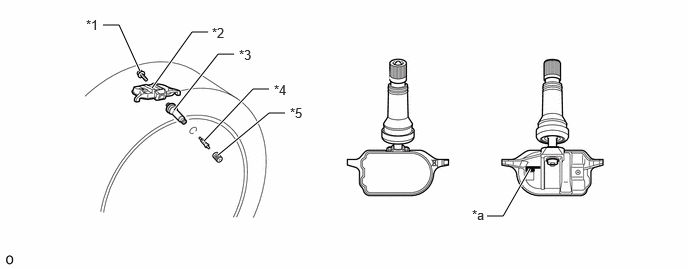

| Last Modified: 10-07-2025 | 6.11:8.1.0 | Doc ID: NM100000002H1ZQ |
| Model Year Start: 2024 | Model: Tacoma | Prod Date Range: [12/2023 - ] |
| Title: TIRE PRESSURE MONITORING: TIRE PRESSURE WARNING SYSTEM: TIRE PRESSURE WARNING VALVE AND TRANSMITTER; 2024 - 2026 MY Tacoma Tacoma HV [12/2023 - ] | ||
TIRE PRESSURE WARNING VALVE AND TRANSMITTER
CONSTRUCTION
(a) The tire pressure warning valve and transmitters are integrated in the tire valves. Each transmitter consists of a lithium battery, sensor and transmitter.
(b) Make sure not to damage the urethane covered backside of the transmitter (the surface opposite to the side with the ID code) with anything sharp.
(c) The transmitter directly measures tire pressure, temperature, and centrifugal acceleration.
(d) The transmitter transmits the measured tire inflation pressure and temperature values to the tire pressure warning ECU and receiver on a frequency of 315 MHz.
(e) Depending on the timing of the data transmission, it may take several minutes to receive the data from the tire pressure warning valve and transmitter.
(f) The ID code is written on the tire pressure warning valve and transmitter.
|
*1 |
Bolt |
*2 |
Tire Pressure Monitor Sensor |
|
*3 |
Tubeless Tire Valve |
*4 |
Valve Core |
|
*5 |
Tire Valve Cap |
- |
- |
|
*a |
ID Code (Hexadecimal 7 Digits) |
- |
- |
HINT:
- The lithium batteries of the tire pressure warning valve and transmitters are non-replaceable. If the battery is depleted, the tire pressure warning valve and transmitter must be replaced. (Battery life: approximately 6.5 years)
- When replacing a tire pressure warning valve and transmitter, each of the tire pressure warning valve and transmitter ID codes must be registered. If even one of the tire pressure warning valve and transmitters is replaced, the ID codes of all tire pressure warning valve and transmitters must be registered again. Record all existing ID codes before beginning the process to enter new ID codes.
- To register an ID code, use the GTS or "TPWS Trigger Tool" to enter the ID code that is indicated on the tire pressure warning valve and transmitter.
- Be careful not to damage the tire pressure warning valve and transmitters when removing and reinstalling them.
- Replace the bolt, tubeless tire valve and valve core with new ones when the tire pressure warning valve and transmitter is replaced or removed and reinstalled. This is necessary to ensure sealing performance.
- When replacing a valve cap, use only the specified cap. If an unspecified cap is used, it may seize to the tire pressure warning valve and transmitter.
- For details, refer to the Repair Manual.